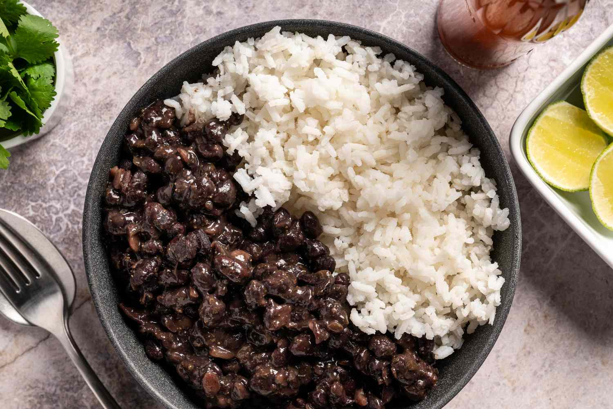

Rice and Beans

Description
Rice and beans, or beans and rice, is a category of dishes from
many cultures around the world, whereby the staple
foods of rice and beans are combined in some manner.
Ingredients
- rice
- cooked beans
- salt
- olive oil
Steps
- Throw 2 cups of rice and water in the cooking pot
- Throw 1 tablspoon of olive oil and salt in the cooking pot
- Wait until water is boiling, then lower temperature to low
and put lid on pot.
- Wait for 20 minutes until rice is cooked, heat cooked beans
in the meanwhile
- Combine both to get the rice and beans plate